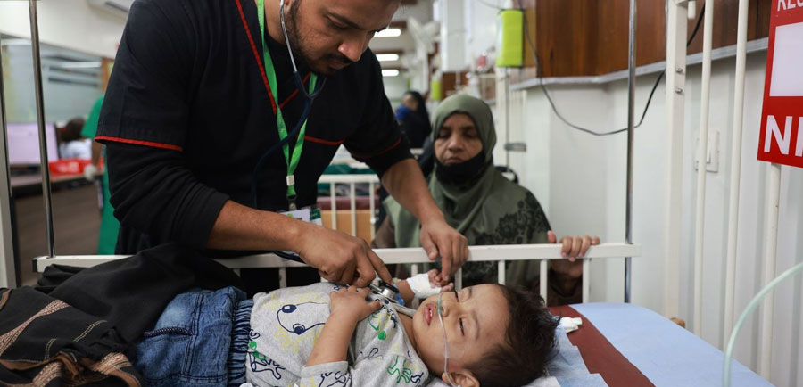

Curating Pakistan's finest impact companies and matching them with strategy mentoring and capital to scale.
240 million people. A learning crisis. A hunger crisis. A mental health system that barely exists. A generation of founders has decided not to wait — and they are building real solutions, with real evidence, at real cost. The missing piece is not ambition or talent. It is the knowledge, capital, and networks to cross from thousands of beneficiaries to millions.

Founders arrive with working models and leave with a Scale Blueprint — a concrete, defensible strategy for reaching millions — presented live to investors on the final day.
Working model. Real evidence. Ambition to go further. Not for organisations still finding their footing — for those ready to think seriously about scale for the first time.
Four litmus tests every intervention must pass: Good Enough? Big Enough? Cheap Enough? Simple Enough? The most rigorous filter in the sector, refined over 20 years.
Founders stress-test each other's assumptions. Mentors push back hard. Models get rebuilt from the ground up. Seven days of the questions most organisations never get around to asking.
Impact capital providers are present throughout the week — asking the same hard questions as the mentors. By Demo Day, they know every venture in the room.
The week ends with every founder presenting their Scale Blueprint to a room of funders who flew in specifically to act on what they hear. Ten minutes. No safety net.
The fellowship does not end when the week does. Every founder joins the Pakistan Scale Collaborative — structured follow-on support and direct access to the funder community.
The fellowship is immersive and residential — no phones, no emails during sessions.
The valley sits at 2,438 metres above sea level, at the point where the Indus and Shigar rivers meet. It was carved by glaciers over 3.2 million years. The rocks beneath your feet are between 37 and 105 million years old.
In June, the surrounding peaks block the monsoon entirely. While the rest of Pakistan swelters, Skardu sits under clear skies at 15–25°C. The air is clean. The silence is extraordinary. There is nowhere else in Pakistan quite like it.
This fellowship is not a new idea from a new organisation. It is a deliberate collaboration between two entities that have spent decades working on exactly this problem — one from inside Pakistan, one from across the world.
Taleemabad is Pakistan's leading EdTech organisation — reaching over two million children through national TV and an app ranked #1 in Education on the Play Store. The fellowship is Taleemabad's attempt to share what it learned building to scale, and to create a rigorous pathway from proof to national impact for the broader social sector.
Mulago Foundation has spent over twenty years funding organisations that achieve impact at genuine scale — 77 portfolio organisations, $26M deployed last year, backing nonprofits and for-profits alike. Their Scale Screen framework is the intellectual backbone of this fellowship, and Kevin Starr, Mulago's founder, leads the curriculum in person.
A tentative, indicative selection of Pakistani founders whose work has been evaluated against Mulago Foundation criteria — a priority problem, a scalable solution, and an organization that can deliver. This list is preliminary and subject to change as the fellowship takes its final shape. Click any card to explore their work.
You cannot think about scale in the abstract. You need people in the room who have actually done it — who know what breaks, what holds, and what it takes to cross the threshold from promising to unstoppable.
We are not building an audience. We are building a room. The funders who attend Demo Day are not there to observe — they are there because they are actively looking for Pakistan opportunities and have cleared their calendars to find them. This is not a conference. It is a deal room with mountains in the background.
* Final funder list subject to confirmation.
Founders arrive with proven models and the drive to go further. Funders arrive looking for exactly that. Summit Fellowship is where those two things meet — in one room, in one week, with no intermediaries.